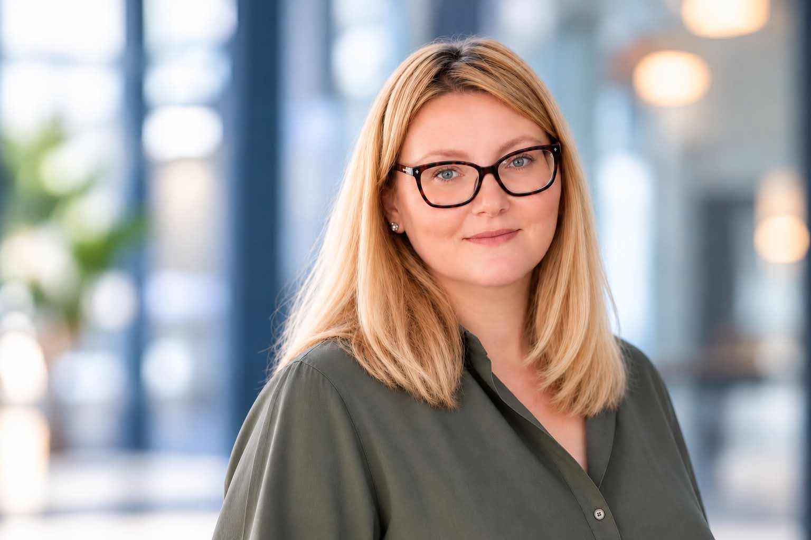

Диагностика и профилактика
Поиск причин симптомов, уточнение диагноза, комплексные обследования и профилактические программы.
Нужен хороший врач, второе мнение или лечение в Германии? Помогу разобраться в возможностях, выбрать подходящих специалистов и организовать дальнейшие шаги. Лично и независимо.
Написать мне
01 / Направления
Поиск причин симптомов, уточнение диагноза, комплексные обследования и профилактические программы.
Оценка диагноза или предложенного лечения у профильного специалиста в Германии.
Подбор врача и клиники, организация лечения и восстановления.
Обследования, консультации и медицинские вопросы нескольких членов семьи.
02 / Подход
Независимый выбор. Не перечень партнёрских клиник, а поиск врача, чья специализация и опыт соответствуют конкретной медицинской задаче.
Понимание внутренних процессов. Создание международного отдела немецкой клиники и руководство им дали мне опыт, который обычно остаётся за кулисами: как правильно направить запрос, согласовать работу подразделений и организовать сложный медицинский маршрут.
Доверие на годы. Многие клиенты обращаются снова — с новыми вопросами, а со временем доверяют сопровождение своих близких.
03 / Процесс
Первичный разговор, изучение имеющихся документов и уточнение задачи.
Подходящие медицинские направления, специалисты и последовательность действий.
Согласование консультаций, обследований и лечения. При необходимости — содействие с документами для медицинской визы и организацией поездки.

04 / Обо мне
С 2009 года я занимаюсь организацией медицинской помощи в Германии для частных клиентов и семей.
В 2017 году мне доверили создать международный отдел немецкой клиники с нуля. К этому времени у меня уже были восемь лет работы с международными пациентами и степень Master of Health Business Administration (MHBA).
Предстояло соединить ожидания пациентов и сопровождающих с возможностями клиники, встроить новый отдел в существующие процессы и наладить взаимодействие между подразделениями. Созданным направлением я руководила семь лет.
Сегодня этот опыт помогает видеть ситуацию с обеих сторон: понимать потребности клиента и знать внутреннюю работу клиники. Это позволяет точнее выстраивать запросы к врачам, выбирать подходящих специалистов и организовывать медицинскую помощь независимо, в интересах клиента.
Образование: MHBA · бакалавр английского и итальянского языков · спортивный и туристический менеджмент
05 / Форматы работы
Профессиональный разбор медицинского запроса и возможных дальнейших шагов — без подбора конкретных врачей и организации лечения.
Выбор специалистов и клиник, организация медицинской помощи и личная координация согласованных этапов. При необходимости — поддержка с визовыми документами и поездкой.
Единый личный контакт по медицинским вопросам нескольких членов семьи. С учётом уже известной истории и индивидуальных потребностей.
Объём и стоимость работы согласовываются заранее.
06 / Истории клиентов
Началось с профилактических обследований, продолжилось заботой о здоровье детей и всей семьи. В 2026 году сотрудничеству с Екатериной исполнилось десять лет.
Читать историюПосле травмы Анне помогли подобрать профильного ортопеда и организовать лечение в Германии. Она вернулась в спорт и впоследствии дважды стала чемпионкой мира, установив мировой рекорд. Спортивные достижения — её заслуга и заслуга команды.
Читать историюДве операции на плече, консультации и восстановление. Главная задача сопровождения — согласовать последовательность медицинских и организационных этапов.
Читать историюС 2018 года Анатолий возвращается с разными вопросами — от ортопедии и стоматологии до ЛОР и профилактики. Знакомство с его историей помогает планировать новые обращения.
Читать историю07 / Контакт
Расскажите, какая медицинская задача стоит перед вами. Я лично ознакомлюсь с запросом и предложу, с чего начать.